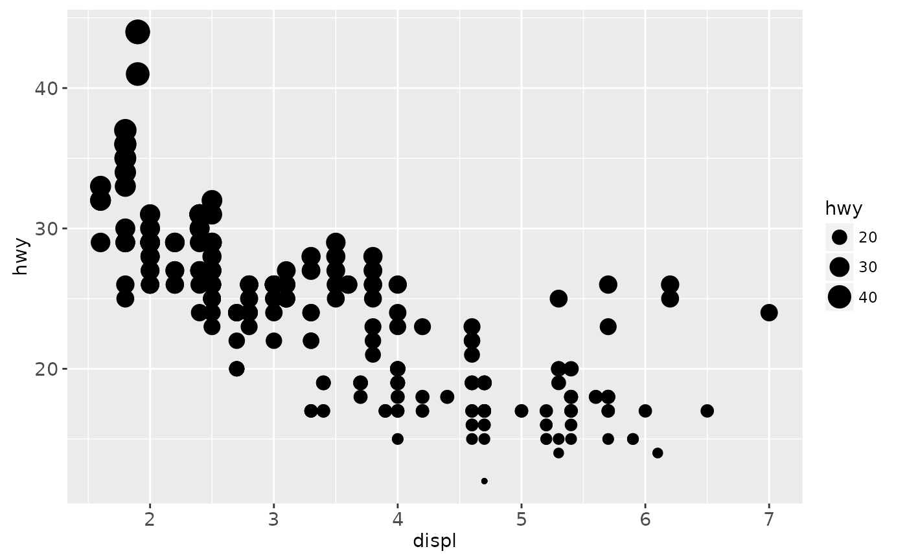
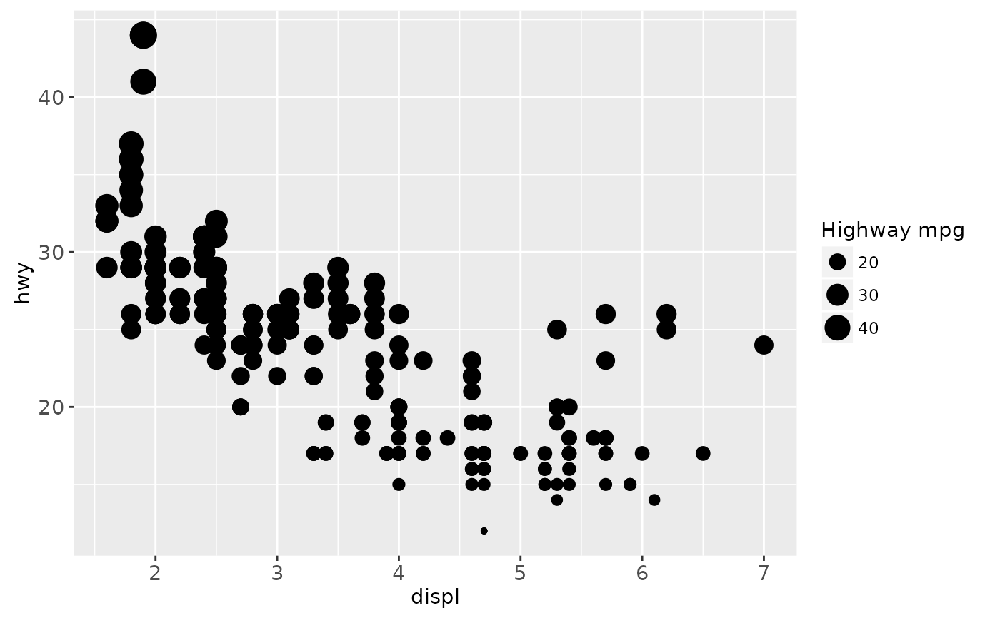
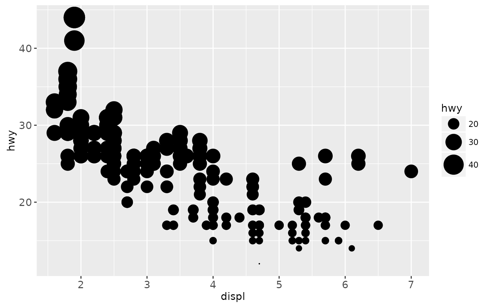
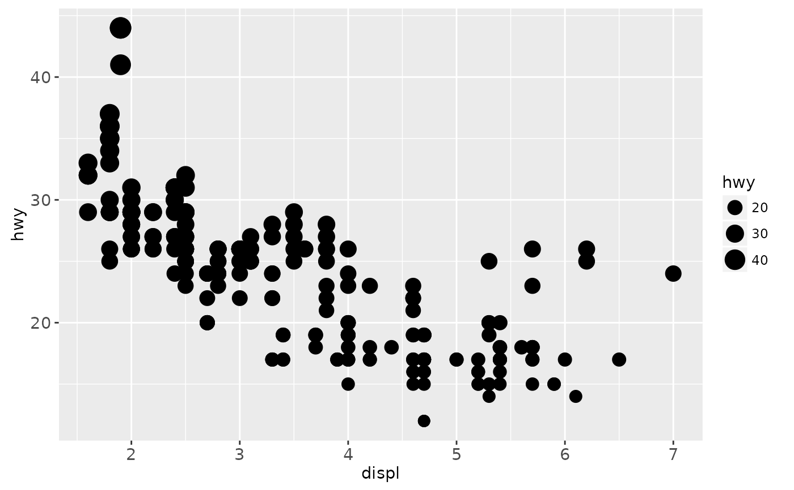
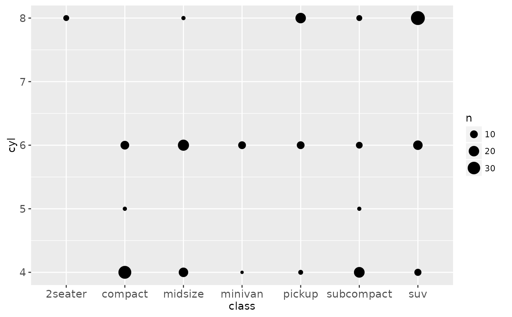
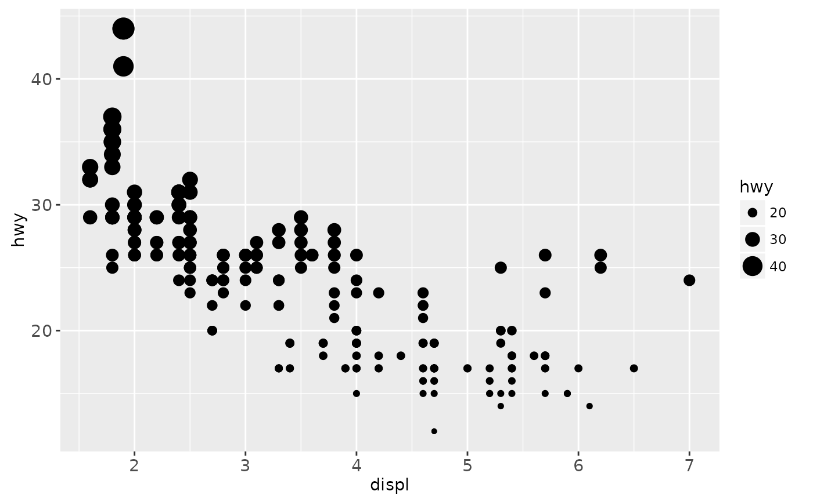

scale_size scales area, scale_radius scales radius. The size
aesthetic is most commonly used for points and text, and humans perceive
the area of points (not their radius), so this provides for optimal
perception. scale_size_area ensures that a value of 0 is mapped
to a size of 0.
Usage
scale_radius(
name = waiver(),
breaks = waiver(),
labels = waiver(),
limits = NULL,
range = c(1, 6),
trans = "identity",
guide = "legend"
)
scale_size(
name = waiver(),
breaks = waiver(),
labels = waiver(),
limits = NULL,
range = c(1, 6),
trans = "identity",
guide = "legend"
)
scale_size_area(..., max_size = 6)Arguments
- name
The name of the scale. Used as axis or legend title. If
NULL, the default, the name of the scale is taken from the first mapping used for that aesthetic.- breaks
One of:
NULLfor no breakswaiver()for the default breaks computed by the transformation objectA numeric vector of positions
A function that takes the limits as input and returns breaks as output
- labels
One of:
NULLfor no labelswaiver()for the default labels computed by the transformation objectA character vector giving labels (must be same length as
breaks)A function that takes the breaks as input and returns labels as output
- limits
A numeric vector of length two providing limits of the scale. Use
NAto refer to the existing minimum or maximum.- range
a numeric vector of length 2 that specifies the minimum and maximum size of the plotting symbol after transformation.
- trans
Either the name of a transformation object, or the object itself. Built-in transformations include "asn", "atanh", "boxcox", "exp", "identity", "log", "log10", "log1p", "log2", "logit", "probability", "probit", "reciprocal", "reverse" and "sqrt".
A transformation object bundles together a transform, it's inverse, and methods for generating breaks and labels. Transformation objects are defined in the scales package, and are called
name_trans, e.g.boxcox_trans. You can create your own transformation withtrans_new.- guide
Name of guide object, or object itself.
- ...
Other arguments passed on to
continuous_scaleto control name, limits, breaks, labels and so forth.- max_size
Size of largest points.
Examples
p <- ggplot(mpg, aes(displ, hwy, size = hwy)) +
geom_point()
p

p + scale_size("Highway mpg")

p + scale_size(range = c(0, 10))

# If you want zero value to have zero size, use scale_size_area:
p + scale_size_area()

# This is most useful when size is a count
ggplot(mpg, aes(class, cyl)) +
geom_count() +
scale_size_area()

# If you want to map size to radius (usually bad idea), use scale_radius
p + scale_radius()
